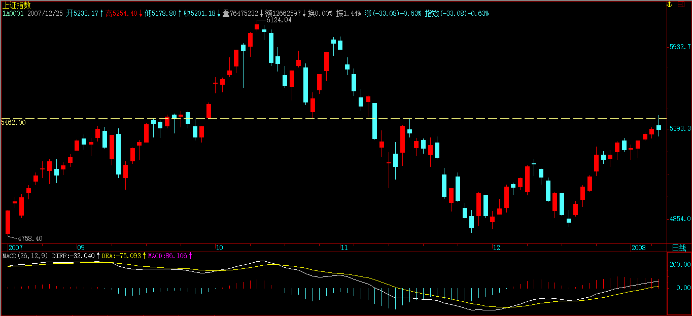

(2007-12-27 20:31:33)
这几天解盘时说到关于中枢震荡的一些细节问题，这里先穿插把相应内容说说。
中枢震荡，最终一定以某级别的第三类买卖点结束。【韶山映山红】为什么这里说“某级别”？★以后研究。】中枢震荡，本级别第三类买卖点结束震荡。如果延伸升级，还是原级别第三类买卖点结束震荡。】
但问题是，如何预先给出有参考价值的提示，也就是如何去监控这震荡是在逐步走强，还是逐步走弱，这是一个有操作价值的问题。【韶山映山红】中枢震荡的走强、走弱怎么定义？是震荡本身的振幅？还是价格的向上向下？★这个强弱不是衡量离开中枢的力度，而是衡量震荡涨跌的力度，所以高为强、低为弱。】
当然，顺便地，可以为每次的震荡高低点的把握给出一个大致的区间。
一个中枢确立后，中枢区间的一半位置，称为震荡中轴Z。而每一个次级震荡区间的一半位置，依次用Zn表示，当然，最标准的状态，就是Zn刚好就是Z，但这是很特殊的例子。【韶山映山红】所谓“最标准”，只是围绕Z的震荡最对称。】
显然，Zn在Z之上，证明这个震荡是偏强的，反之偏弱。【韶山映山红】这个强弱不是衡量离开中枢的力度，而是衡量震荡涨跌的力度，所以高为强、低为弱。】震荡的中枢区间是[A，B]，那么，A、Z、B这三条直线刚好是等距的，【韶山映山红】三条水平线。】Zn的波动连成曲线，构成一个监视中枢震荡的技术指标。【韶山映山红】技术指标的图形就是“Zn的波动连成曲线”，横坐标轴是“A、Z、B这三条直线”。】
当然，只要有波动，就可以用类似中枢、走势类型之类的手段去分析，不过Zn的数量不会过于庞大，不会超过9个数据，超过了，次级别就要升级了，所以这样的分析意义不大。【韶山映山红】只要有波动，就算不构成中枢、不是走势类型，也可以用类似中枢、走势类型之类的手段去分析。具体怎么分析呢？★以后研究。】
一般来说，这个指标是一个监视。【韶山映山红】只是“监视”，不构成分析。】
这里，存在着一种必然的关系，就是最终，Zn肯定要超越A或B，为什么？如果不这样，就永远不会出现第三类买卖点了，这显然是不可能的。【韶山映山红】构成第三类买卖点的返回段的Zn不进中枢，所以肯定要超越A或B。】
但必须注意，反过来，Zn超越A或B并不意味着一定要出现第三类买卖点的，【韶山映山红】震荡还可能被拉回。】也就是，这种超越可以是多次的，只有最后一次才构成第三类买卖点。不过实际上的情况在绝大多数情况下没有这么复杂，一般一旦有这类似的超越，就是一个很大的提醒，也就是这震荡面临变盘了。【韶山映山红】每一个大幅度震荡都假设是离开段去对待。】
一般来说，如果这超越没有构成第三类买卖点，那么一般都将构成中枢震荡级别的扩展，这没有100%的绝对性，但概率是极为高的。【韶山映山红】虽然没有构成三买卖点，但是该段单向离开中枢的幅度比较大，为扩张升级制造了有利条件。】大幅度的离开中枢，往往都是abc非背的，没有形成第三类买卖点，往往就是V型反转，有可能形成同级别转折，进而构成中枢震荡级别的扩展。】
有了这些知识，对于中枢震荡的可介入性，就有了一个大概的范围。对于买来说，一个Zn在Z之下甚至在A之下的，介入的风险就很大，也就是万一你手脚不够麻利，可能就被堵死在交易通道中而不能顺利完成震荡操作。【韶山映山红】向下段的高点要靠近ZG、GG或者更高，低点要向上靠近Z。】
同时，那些Zn缓慢提高，但又没力量突破B的，要小心其中蕴藏的突然变盘风险，一般这种走势，都会构成所谓的上升楔型之类的诱多图形。这种情况，反着，同样存在下降楔型的诱空，道理是一样的。【韶山映山红】无事献殷勤，非奸即盗。】
【韶山映山红】楔形结构，以两条相互聚拢的趋势线为特征，其交点称为顶点。楔形的与众不同之处在其明显的倾角上。楔形具有鲜明的倾角，方向很明确，要么向上，要么向下。一般地说。楔形如同旗形一样，其倾斜方向与流行趋势相反。
缠师说的上升楔型的诱多图形。上升楔形为看跌形态，下降趋势中，两条聚拢的趋势线无疑是倾斜向上的。
缠师说的下降楔型的诱空图形。下降楔形属于看涨形态，它在两条聚拢的趋势线包围下倾斜向下。
文字与图形摘编自《期货市场技术分析》［美］约翰·墨菲 丁圣元 译。】
另外，中枢震荡中次级别的类型其实是很重要的，【韶山映山红】实际上是关注中枢离开段的走势类型。abc线段类盘整，a+A+b盘整，abcde线段类趋势，a+A+b+B+c趋势。】如果是一个趋势类型，Zn又出现相应的配合，那么一定要注意变盘的发生，特别那种最后一个次级别中枢在中枢之外的，一旦下一个次级别走势在该次级别中枢区间完成，震荡就会出现变盘。【韶山映山红】变盘是反转？还是趋势+盘整？★】容易形成第三类买卖点。】次级别趋势离开，次级别趋势的第二个中枢在大中枢之外，不算三买，还要有一个回踩才算。否认了神燕第二个中枢是三买的主张。】
【韶山映山红】Zn出现什么样的配合？★
１，Zn是这个次级别趋势。最后一个次级别中枢在中枢之外，下一个次级别走势在该次级别中枢区间完成，就会出现第三类买卖点，震荡将发生的变化，就是Zn出现盘整背驰的配合，中枢扩张升级，或者Zn出现盘整不背驰的配合，走出本级别趋势。
２，Zn不是这个次级别趋势，那就是前面的次级别走势。这个次级别趋势的最后一个次级别中枢在中枢之外，下一个次级别走势在该次级别中枢区间完成，同样会有第三类买卖点出现，但是和本级别中枢形成方向相反，也就是说，会在反方向扩张升级或者走出反方向的本级别趋势。这是真正的变盘。那么，Zn的配合就是形成原方向的二卖。】
结合上布林通道的时间把握，这样对震荡的变盘的把握将有极为高的预见性了。【韶山映山红】怎么样结合？★★★可以做个专题，以后研究。】
除了特殊的情况，Zn的变动都是相对平滑的，因此，可以大致预计其下一个的区间，这样，当下震荡的低点或高点，就可以大致算出下一个震荡的高低点，这都是小学的数学问题，就不说了。【韶山映山红】盘整延伸的相对平滑。】
(2007-12-28 15:27:45)
其实，这句话是有问题，今天指数虽然低调，但个股并不是都低调，例如本ID说那些股票，大多数就都继续在上攻。这也预示了明年的一个基本特征，指数油水不太大（除非期货很快出来），而个股油水不少。关于明年的分析，一早已经给出，请看“2008年行情展望 2007-12-20 15:59:05”
今天的大盘，技术上十分标准，就是第三买点后出现标准顶背驰，
然后就使得走势从1分钟级别向5分钟扩展，现在，一个新的5分钟中枢已经形成，后面就看这5分钟中枢的震荡过程。
估计这次4800点上来的1分钟走势，虽然很标准，但也不一定都能分解对，下面有图，其中286、296是第一、二个中枢的第三类买卖点。297顶背驰后，最少跌回287下，这点已经完成，所以这5分钟中枢的扩展是逃不掉了。【韶山映山红】1分钟走势是280-297上涨趋势，趋势背驰后转折，第一段下跌到298跌回了最后一个中枢的GG，没有跌回最后一个中枢的ZG，最后一个中枢扩张升级。】
下面的问题，很简单，就是这5分钟的走势类型究竟是一个上涨还是盘整，如果是上涨，这是第一个中枢。明年的第一个问题，就是这5分钟中枢的第三类买卖点问题。
明年，小心“井”，这就是本ID年末最好的忠告。
年末的功课，就是把“2008年行情展望 2007-12-20 15:59:05”提到的箱体给算出来，这是明年走势的一个基本框架指导。
去年年底有6元的000999，【韶山映山红】000999三九医药，2010.02.24变更为华润三九。】今年下半年有8元的600737当各位的学费，【韶山映山红】600737中粮屯河。2017-02-17变更为中粮糖业。】但现在没有，因为明年的行情，本ID的原则是把该原有的完成了，新的没有什么好选择，毕竟明年不是前两年，土都耕种了两三年，明年能收割好就是真本事，后面，是该施肥增加肥力的时候了。
说一句有点恶心的话，资本市场里最好的肥料，就是人。这话恶心，却是真相与事实，关键是，不要把自己当成了肥料。
为了让各位不至于成为肥料，明年指数无论到什么地方，这里只有绿色，就是让各位时刻提醒自己，至少可以知道，如果当了肥料，就见不到新苗了。【韶山映山红】本文全篇宋体18加粗，绿色R0G153B0。】
先下，再见。
注意，下面的300并不是已经完成的。
(2007-12-28 15:56:00)
本ID要赶着出去干点私事，年末大假不能太亏待自己。
先赋《沁园春》一首，祝各位2008新年好。
2008年1月2日再见各位了。
《沁园春》
缠中说禅
踏浪天河，扬九星帆，执七斗壶。
命吴刚酿就，月宫桂酒；
羲和摘献，日殿龙珠。
黑洞探玄，灰熊试剑，
今古乾坤入有无。
谁堪共？尽时空隧道，声色荆途。
森罗万象如如，
能纵目，头头皆是吾。
笑王臣兵贼，千朝百国；
人神鬼兽，六合三涂。
幻海风迷，浮沤梦戏，
意画心描自主奴。
何所缚？转黄金大地，毒药醍醐。
(2008-01-01 17:38:18)
本ID是严重反对“中国大妓院”这样的名字的，因为这里存在着严重的男权思维，但这样的称呼，至少在北京私底下已早不新鲜。这么多血汗钱，如果能搞出个真玩意，那还算是个玩意；但连个玩意都没搞太好，那究竟是什么玩意那就不用再玩意了。
新年新气象，那不是玩意的东西就不提了。去年，本ID的几篇文章，事后都达到其效果，至于是否与本ID的文章相关并不重要：
““港股直通车”难以背负的使命 2007-09-24 08:52:17 ”，在那无聊的脑子进水的直通车甚嚣尘上时写的，现在，那车终于还是没开起来，中国经济、市场的大幸；
“中国经济，已需治理整顿。2007-10-15 08:32:52”，后面的经济政策，已经与此相关；
“房地产泡沫，经济发展的真正毒瘤2007-10-09 20:57:56 ”，听说前几天有一姓王装模作样的在CCTV完全对文中这一段类似内容进行了回应：“比单纯的房地产泡沫更大杀伤力的，就是股市中房地产股票比重太大，在虚实两方面制造房地产泡沫。房地产企业，通过所谓的重估，拉抬自己的股价，从而用极高的价格在市场上圈钱，再去圈地，炒高土地价格与房价，然后再进行重估，开始新一轮恶性循环。没有比这种游戏更能制造恶性经济泡沫的，这绝对是致命的游戏。因此，当某些公司戴上世界上最大房地产企业的高帽高呼要去冲击万亿市值并借此大肆高价增发圈钱，有些股票只是因为某房地产企业的注入就连拉几十个涨停之时，这房地产与股市的虚实结合所产生的危机就已经到了不可忽视的地步。在股票市场上做庄的，只要资金链不断，那杠铃还不一样能一直举着？那些大面积囤地的房地产商，本质上和庄家没什么不同，如果他们从资本市场、银行体系上不断补充新鲜血液，那房地产的狂潮是不可能得到平息的。”
类似的文章还有不少，就不列举了。那么今年，本ID第一篇想说点什么？08年证券市场的头等大事：尚主席，该高升了。
用人就如同用药，每个人的能力与思维方式都像一种药性，药性是不容易改变的，药性的发挥与时机相关，这时机对的药，可能在另一个时机就不是好药了。
本ID从尚主席上任之初就一直给他鼓掌，甚至在别人不看好其股改政策时，本ID鼓掌力度更大，为什么？因为那时候药性是对的，这药用的是时候。
现在，尚主席已经为证券市场立下汗马功劳，应该高升了。任何好药，过了时候，反过来变毒药的机会就大增了。因此，无论对中国的资本市场还是尚主席本人，这时候快点高升，都是最好的选择。【韶山映山红】尚福林于2002年12月任证监会主席，2011年10月调任银监会主席。任期内推动的股权分置改革使中国证券市场在2006年发生历史性变革。】
多余的话，就不想说了，本ID对证券市场，08年只想看到三件事情：
一、创业板的推出；【韶山映山红】2009年10月30日创业板正式上市。】
二、股指期货的缓行；【韶山映山红】沪深300股指期货合约2010年4月16日上市交易。】
三、印花税的纠错。【韶山映山红】2008年4月24日印花税从3‰调整为1‰，只对出让方收取，受让方不再征收。】
[匿名] 不想飞
今天奥运都好很强，别跟奥运过不去，早上追的802跟燕京啤酒000729现在已有不错的收益的，千万别跟势过不去哦。各位新的一年好运！
2008-1-2 10:15
[匿名] 不想飞
[匿名] 新浪网友
我心,不想飞,中国铝业套中,现能补仓吗?
＝＝
深套就玩点别的，比如我有提醒过的，创投，奥运，旅游之类的。套的不深现在的价位可以补。
2008-1-2 10:38
[匿名] 不想飞
[匿名] 新浪网友
全聚德,国贸,北京旅游,北新建材,燕京啤酒,10%.牛
＝＝
今早补的三支，北京，燕京，国贸，没想到是这个结果，一个奥运就把他们疯的不成样。
2008-1-2 10:41
[匿名] 不想飞
[匿名] 新浪网友
[匿名] 不想飞 2008-01-02 10:41:21
[匿名] 新浪网友
全聚德,国贸,北京旅游,北新建材,燕京啤酒,10%.牛
＝＝
今早补的三支，北京，燕京，国贸，没想到是这个结果，一个奥运就把他们疯的不成样。
==
学长如果早些公布就好了.让我们也跟着疯一下.
呵.
＝＝
创投还有很多机会疯，好好把握吧。
2008-1-2 10:46
[匿名] 不想飞
[匿名] 新浪网友
不想飞学长麻烦看看三九要出来吗?刚解套.谢谢了.
＝＝
三九，我怎么看都看好它是一支黑马。玩姐姐的票一定要有耐性，这个比技术还重要。
2008-1-2 10:48
[匿名] 不想飞
[匿名] 新浪网友
学长如果早些公布就好了.让我们也跟着疯一下.
呵.
＝＝
[匿名] 不想飞 2008-01-02 10:46:08
创投还有很多机会疯，好好把握吧。
======
[匿名] 新浪网友
GG指条明路吧.想与您战斗在一起.
＝＝
938又快要涨停的，它是创投龙头。我还有一支中化，有兴趣可多留意。
2008-1-2 10:51
[匿名] 不想飞
[匿名] 新浪网友
不想飞学长呀 那我的神华怎么办呀
＝＝
短线上是套不住你的，赚多少有待观察。
2008-1-2 10:57
[匿名] 不想飞
[匿名] 我是谁
关于创投的龙头问题,我有个看法,望见谅(不想飞).
从去年下半年及本次反弹的情况来看,创投的龙头应该是力合(000532),而最近一周的走势看,确是938走得更强,但这主要是占了北京搬块的光,所以想追创投股的学友不妨关注一下力合
＝＝
短线上的玩法是有阶段性的，938又是创投，又是奥运概念，这时的首选当然是938的，其实选股就这么简单，802即是奥运又是旅游，燕京跟938即是奥运又是创投，什么都不懂就这样选股，只要你看好创投，奥运，旅游，那么有多个一体的条件股一般就是首选的。
2008-1-2 11:11
[匿名] 不想飞
李安是谁？怎么这多人在谈论他，谁告诉我下，不好意思很少看电视！呵呵！
2008-1-2 14:55
[匿名] 不想飞
[匿名] 珊瑚
李安是谁？怎么这多人在谈论他，谁告诉我下，不好意思很少看电视！呵呵！
----
飞飞，你生活在火星吗？《色 戒》的导演....
＝＝
地地道道的地球人，但《色 戒》是什么我还是不懂。你要说是电影就难怪我不懂的，N年N年N年不看那玩意的。
2008-1-2 15:08
(2008-01-02 15:12:24)
如同这题目，第一天的行情继续预示着本年行情的特点，指数油水不大，个股油水不少，这已经在去年末反复说到了。用句概括性、动感更大的口号，就是：疲软指数，高潮个股。
当然，指数也不会无限制地疲软，指数往往会表现出痉挛式走势，突然抽起来，然后就再抖个不停。抽两下，抖十下，大概就是今年指数上经常会碰到的。哪天指数不痉挛，而是一往无前起来了，那反而要小心。
技术上，指数就是继续去年末那5分钟中枢的震荡，在第三类买卖点出现之前，继续抖个不停。
个股上，没什么可说的，本ID说的那些股票，今天又有好几只创出6124点来的新高，对于个股来说，6124点的高位就是一个强弱分界，突破站稳这位置，行情就会更猛烈。例如，600737就是一个好例子，14元多是6124点下来的高位，突破站稳后，现在已经到20元上了。【韶山映山红】600737。】
当然，对于具体个股，突破那位置后肯定都有反复，对待这种反复，最好的就是顺着做短差，把差价搞出来又不丢失筹码，不过这对操作水平要求高。还有一种就是定好5周线之类的中线位置，只要调整不破就拿着，例如，你看看600737，晃来晃去，把无数人恐吓下去了，你看他突破调整后什么时候有效破过5周均线？
面包会有的，今年是越早越安全，现在，个股机会远大于风险，就算个股年线要收阴，怎么也要先搞一个上影，而越到年中以后，就难说了。今年是先把粮食打足了，如果能有第二次机会最好，没有，也不会饿着了，一年的面包也会有着落了。
千万别追高买任何股票，如果错过了前面的，就在低价与二线中找那些反应迟钝但有资金驻守的。都是人，都要吃饭，只要有资金驻守，总要开张的，否则一年的花费谁给呀？
至于大家伙，技术好的，就等抽筋那几下抽点血，抖的时候就不一定陪着玩了。
先下，再见。
(2008-01-02 19:58:17)
本ID比较专一，就算419，也要把玩物给玩废了才收手。最近既然已经把周树人这垃圾股反复拉抬打压进行抽血性操作，那么最后，肯定要往退市的路上把这鸭子给挤兑了。
有一个很奇怪的说法，把周树人和毛泽东混在一起谈。其实，这两者哪里有什么鸭屁关系？在周汉奸的角度，他去见他的日本祖先前，对毛泽东也不会有太多的认识，毕竟那时候的毛，并没有真正坐在第一把交椅上。周对毛的认识，也就停留在一般性新闻式灌输上。【韶山映山红】鲁迅逝世于1936年10月19日。当月，红军三大主力会师，结束长征。当时毛泽东只是遵义会议后成为中央政治局委员，三人军事指挥小组之一。】
至于毛方面，毛大爷是何许人物？真正看透政治游戏的高手，死在其手下的成名人物数都数不过来，周汉奸这种政治弱智分子，哪里会入毛大爷的法眼？
那么，毛大爷为什么最终选择了周忽悠了那些傻蛋知识分子一把？因为毛大爷有这能力，就是把丈六金身当一稻草耍，又把一稻草耍成丈六金身。周汉奸这败草在毛大爷的耍弄下，成了收降那些知识粪子的幻影武器。
以毛大爷的政治智慧，当然知道岸到舍筏的道理，何况周汉奸这样的败草。那些周汉奸的兔子兔孙，以它们吃草的智慧，竟然以为毛大爷给周汉奸贴金了，简直最大的政治笑话。
周汉奸的兔子兔孙们，就别把你们的汉奸猪鬃往毛大爷身上扯了，免得继续成为大笑话。
毛大爷，自古以来第一英明神武的政治高手，周汉奸连当他脚下的泥都不配。周汉奸的兔子兔孙们，就让你们的汉奸猪鬃在拔舌地狱里好好享受，别再出来献丑了。
y与缠相缠
上次在“何谓五四小儿的西方老爸葱白的人性 ”就又有，鲁莽不过是一颗棋子、工具而已。但不知谁删了。但我知道不是博主。
2008-1-2 20:29
精益
把毛主席仅界定为政治高手
太小看人了
其实又何止政治呢
毛主席是钻石型的伟人
是面面发光
而不是一面发光
那个时代中华民族生死存亡的年代
鉴定一个人的素质水平的就是对国家民族的贡献
而政治不过是一个比较好的手段而已
所以毛主席在这些方面有着前无古人的表现
以毛主席的素质而论
在今天就是炒股
也不一定会输于巴菲特
2008-1-2 20:39
新浪网友
这俩人我都不喜欢,一个是伪君子,一个是暴君.绝对的政治高手,但不同意英明神武,他收拾大臣也就罢了,还把整个国家祸害的惨不忍睹,大浩劫!
2008-1-2 20:43
精益
不同意缠对鲁迅的评价
我看过鲁迅和许广平的情书 也就是俩地书
里面有不少内心独白
鲁迅的为人确实不可爱
有点自卑心理
但是说他是汉奸
证据何在
54运动的领军人物之一胡适说过
拿出证据来
没有证据的话就是54强烈反对的民族劣根
没有证据的说话是中国几千年来知识分子的通病
想当然而 只不过是不讲科学不负责的一种表现
2008-1-2 20:47
精益
虽然对缠的股票技术很是佩服
但出于我爱吾师.我更爱真理的态度
我觉得缠对鲁迅的理解很是偏激
没有一点点的客观而言
是不是有什么家仇
鲁迅点名批评过她的祖先什么的
你想把鲁迅玩废
你是谁
你以为你是你口里的毛大爷啊
不过是在网上匿名恶意攻击的黑人而已
要是你能把他玩废
就公布你的真名
拿出他是汉奸的证据嘛
到日本留过学都被洗脑了
老蒋也日本流学了
老蒋也是汉奸
和日本人交朋友
到日本留学的哪个没有几个日本朋友
2008-1-2 20:57
缠中悟禅
老毛的诗词有些缺陷，多看看古诗词就知道了，做人方面老毛比朱元璋坏，朱元璋也就一个原配，老毛没跟贺子珍离婚就跟江青住在一起了，杀起功臣来他们是一个样子的。
2008-1-2 21:20
(2008-01-03 15:18:39)
站住5209点颈线，下一位置就是5500-5600一线，这是十分简单的技术问题了。由于这个5分钟的中枢震荡还没有震荡出第三类买点，所以说这颈线突破100%有效是不严谨的。但生活有时候并不太严谨，否则就太无趣了，所以，没有100%的把握已经确认的事情，我们依然可以喊：向5600高地攻击前进。
做股票，说白了就是忽悠着冲锋陷阱，只是你去忽悠别人，别让别人忽悠你。既然08年属于早收割早有面包的年份，我们当然要在年初就大力忽悠。说实在，“向5600高地攻击前进”这点小目标，说出来都不好意思，也太低了，不过先忽悠低的，现在的人胆子小，毒药要慢慢喂，不像以前，说年内冲10000点，都有人和你急，他愣要说10000太低，还是12500比较好，50个250呀。
如果要冲指数，当然就轮到大家伙抽风的时间，但一定要认清楚现在他们抽两下抖10下的本性，现在是刚一阳复始，不适宜大家伙们太剧烈的运动的。
其他个股，去年下半年基金牛了一把，私募都憋坏了，今年肯定要报仇的。所以，收集好的，肯定是按节奏继续搞，没收集好的，就加快摩擦速度，不过那些现在都没收集好的，都是有点毛病的，算了，反正每次都要有人最后垫背的，没什么可说的。
个股的大节奏昨天说的，分水岭就是6100点相应的位置，对于中低价的，可能530那次是另一个更高的位置，如果在春节前后都不能有效突破这些位置，那这股票今年的前途就有问题了。当然，不排除有些最后当炮灰的庄家就是这么慢，但这里说的是正常的节奏，不说炮灰。
在那些分水位置上，肯定都要洗洗，如何洗，那是手法问题，看明白了，这股票就是给你送钱的，来这里，希望是真学会点什么。否则，白送股票给你也没用。例如，600737，8元这么明确告诉是送学费的，但估计也没几个能真把钱给挣到，这难道也是本ID的错？
再说一遍，本ID在这里只是陪练，能学到多少，还只能靠自己了。
先下，再见。
(2008-01-03 16:33:13)
今晚有事，早点把文章扔上来。下了，再见。
昨天说毛大爷是自古以来第一英明神武的政治高手，左派很不高兴，右派也很不爽。
左派认为，毛大爷是神，样样第一，所以陶杨贺李地也第一了，怎么能光说政治呢？【韶山映山红】罗一秀杨开慧贺子珍李云鹤。】
右派认为，毛大爷是暴君，样样不行，还是它们的华盛顿厉害，蒋光头也不错。本ID就奇怪了，只有奴才才到处认什么君，把毛大爷当成暴君，那潜台词就是右派把自己当成被暴君了的臣子、奴才，看来，右派见了毛大爷就发抖，连斗地主都输给毛大爷，确实有着很弗洛伊德的原因，所以，我们就原谅它们吧。
右派很弗洛伊德，今天就不刺激它们，刺激一下左派。
说实在，毛大爷唯一可以看看的，就是其政治军事上的成就了，至于其他什么书法诗词，如果没有那些政治军事上的成就包装，都只能归于二三流之外。
在政治上，毛大爷确实是自古以来第一英明神武的政治高手。不过，这世界上，有第一，当然就有超第一的。那么，谁又是自古以来超第一英明神武的政治高手呢？
他，英俊潇洒，公认的中国美男子；他、武功高强，这点知道的人比较少，其实，就算你不知道真相，想想一个在上海滩上、蒋光头屠刀下出入自如的人，光是小白脸，可能吗？他，酒量惊人，这点本ID喜欢，那号称在少林寺混过的大酒桶，一和他过招就败下阵，牛呀。【韶山映山红】许世友。三野9纵。上将，经常略高于李天佑。1971年助毛灭林党羽。】
当然，比起他的政治成就，上面这些都不算什么。一个人的成就如何，关键是看其对手以及所经历的环境。请问，从21年开始的党内国内寰内风云中，有谁从来都是屹立不倒而永远在最高峰之上的？除了他，没有谁了。 连毛大爷也有郁闷的时候，可他从来没有，一切都在把握之中。这是什么？这就是功力啊。
高人，总是不露相的。毛大爷，风风火火，其实，最终都没走出他的化骨绵掌编织的气团。毛大爷能在30年代逐步坐正，没有他，根本不可想象。
他，肯定是他那一代人里最明白中医之理的。心，是主，但却不是太极之位，这就是中医最玄妙的地方之一。这道理，知道的人少，真明白的更少，明白又能应用自如的更少之又少。真能应用自如了，就是超一流的高手。
毛大爷，是心，是主位；而他，永远在太极之位，生生不息，牛呀。看看76年后的中国，还不是依然在他的化骨绵掌编织的气团中。【韶山映山红】化骨绵掌，金庸《鹿鼎记》中的武功，是一种极为难练的阴毒功夫，被化骨绵掌击中的人开始浑如不觉，但两个时辰后掌力发作，全身骨骼会其软如绵，处处寸断，脏腑破裂，惨不堪言，再无救治。】
这样的自古以来超第一英明神武的政治高手，如果都看不明白，你就永远不懂政治，当然也就永远不懂得人生。
学点中医吧，人体小世界，世界大人体。政治、人生，不过就那么一点屁事。
honestk
是呀，阴柔与阳刚，折服了几多英雄豪杰！
玩政治的人就是成王败寇！
不倒翁就是厉害，多大的江河之水也无法奈卵石之何！
2008-1-3 17:09
(2008-01-04 15:12:12)
今天走势最大的意义是什么？站在本ID理论的角度，就是突破5336使得周线上（1，1）的状态延续，在周线的（1，0）出来之前，也就是周线顶分型出现之前，尽管持股睡大觉。
炒股票，对于中短线来说，有什么比周线都出现向上笔的延续更理想的状况？在这种状况下，你的利润就有了一个超稳定的保障系统给于最强有力的保障并使得该利润尽可能地延伸。那些每天如惊弓之鸟一般的，请好好复习一下历史图形，如果那让你每天惊弓之鸟一样的震荡连周的顶分型都震荡不出来，那又有什么可惊弓之鸟的？
请复习一下历史走势，看看从3563点到6124点的走势，按照本ID理论里最低级的周顶分型就足以让所有的利润得到最大的延伸。
当然，如果技术高的，在周的（1，1）延伸里，也可以利用更低级别的走势搞出不少差价来，或者通过不同级别的震荡换股达到利润最大化。但这是对技术高的说的，如果没那技术，就天天睡觉，顺便可流点口水，每天收盘很无耻地看看周顶分有没有出现，然后继续更无耻地睡大觉，这样就足以让你超无耻地比很多人厉害了。
来本ID这里，关键是学东西。如果太计较自己有没有这股票，是不是赚了，那你的水平永远提不高。还是用本ID的股票为例子，一个最令人深恶痛绝的股票：600636。【韶山映山红】600636三爱富】你是否在里面赚钱并不重要，关键是你能否在这经典走势中学到点什么。看看这经典的走势：一个ABC的下跌，其中的B段在120天线受阻，然后大力挖井后回手在120天突破回试确认，然后迅速回到井的上沿13元附近，一个超完美的井。后面干什么？就是要确认这井的上沿能否站住的问题了，这都是最标准的走势。如果对这类似的走势烂熟于胸，难道你还不能自如地应付类似的走势？
【韶山映山红】600636三爱富。】
600078、000938等的是另一类型的走势，也是超经典的，请当成作业分析一下。【韶山映山红】600078澄星股份、000938紫光股份。】
周末，又是多头发挥嘴皮子功夫的时候。多头，有了冲动就要喊。上升行情，本质上是喊出来的。就是上升多头爽了，然后就喊，见人就喊，喊得满大街的人都很冲动，结果就又上又升了。
周末，多头就多喊喊吧，爽了不喊会憋坏的。
至于超短线的技术分析，由于第三类买点还没有整出来，因此今天的突破并没有100%的保证，这突破是否有效，就看多头周末的嘴皮子功夫与喊功的诱惑力了，把大家都喊爽了、都冲动了，大盘自然就有效突破了。
周末，爽去吧。
先下，再见。
(2008-01-05 10:09:09)
对于被白话文毒害的人来说，律诗有所谓的枷锁。其实，律诗哪里有枷锁？本ID只看到自由。从今天开始，本ID就要用七律给世界上自古以来本ID看得上眼的诗人画像，组成一诗人的画廊。这画廊要慢慢来，先请出李煜/李商隐。
李煜
缠中说禅
独上西楼月半弯
遥遥故国隔千山
一时落拓兵时代
万世风流情世间
锦绣词章萦百结
迷离光景锁重关
君愁恰似春江水
终古奔旋碧海湾
李商隐
缠中说禅
无端珠泪滴琴弦
白发难回向夕天
终古情酣碧一树
长空梦冷夜谁边
成灰蜡炬心犹紫
过雨灵旗血更鲜
倦日半轮重岭外
苍茫乱野伫孤烟
(2008-01-06 09:21:27)
你，一无所有。那么，你是什么？是那一无所有的某种玩意吗？如果你就是一无所有的某种玩意，那还是你的什么，而不是你。
你什么都不是，连什么都不是的不是都不是。如果说一定要指出你是什么，那么只能说，你只是一个假设的名词，一个约定的术语，一个虚拟着安放上去的熟语，一个意淫的幻像。
如果有人觉得确实有“你”这种玩意，那么请找出来。但永远没有人能找到“你”，因为能找到的都是“你的”，诸如你的世界、你的身体、你的欲望、你的信仰、你的学问、你的地位、你的家庭、你的一切等等，而不是“你”。
“你”，从来就未曾有过。所以，任何关于“无我”的说教、修炼都是可笑的。任何人，从来就是无我的，不管你认为你自己是否有我，你都是无我的，又用什么“无我“的说教与修炼？
“你”，永远找找不到“你”，因为从来没有“你”，有的只是一个名词、术语、熟语、幻像；“你”，从来都是无我的，任何一个人，企图要去抓住一个“我”，就如同企图去抓一个名词、术语、熟语、幻像一样可笑。
“你”的存在，不过是一种业力合力的结果。在不同的时代、文化背景下，“你”的形式都是不同的，更不用说在不同的六道轮回中。就算现在，你去南美洲的森林里去问那些所谓的原始部落，他们的“你”的合力形式，显然就和我们这个所谓的全球化美丽新世界里的“你”的合力形式有着绝大的不同。
有人可能说，原始部落没有进化，他们那不是“你”。有这种想法的人，绝对是脑子进水身子欠揍，别说所谓的“人”不过是一个并不太高明的生命形式，就算是同样的“人”，现在的所谓高等级的地球人，在某些外星人眼里，可能连我们之于蚂蚁的等级都比不上，这些所谓的高等人类的所谓“你”，一样是狗屁不是。
“你”，这个幻象，可以有无穷的合力形式，不同的生命形态、文化传统、思维方式等等。说一句从来没有人说过的话：所谓的“文化”，不过是“你”的幻象的同构性演化。
一个被科学所合力着的“你”，当然就同构性地演化出所谓的“科学文明”来；同样，相信巫术的世界里，有着他们自己的文明文化的同构性演化。这些，本质上都没有什么区别，不过是本ID一句诗句所写的“意画心描自主奴”而已。有了这个“你”，所有人玩的不过都是“意画心描自主奴”的游戏。
有人可能要问，打坐需要去掉这个“你”吗？这个“你”，不过是一个词语、一个幻象，何尝需要去掉？能去掉的都是“你的”。而打坐，不添一法、不减一法。你去掉什么？
这里，没有一丝一毫需要有力的地方，也没有你用力的地方，用力则乖，不用力就更乖，为什么？不用力，其实是用了大力。
有些垃圾人，总是在叨唠什么放不下就举起来之类的垃圾话。这里，没有任何需要放下的，因为从来没有什么被抬起来过，能抬起来的，不过都是幻象。对着幻象，又放下又举起的，不是脑子进水是什么？
这里，没有一法需要放下，没有一法需要举起。很多人，受那些所谓的明师忽悠，打所谓的坐，搞得神经叨叨的，又举起又放下，守这里守那里，这哪里是打坐，明明是练习当面首啊。
如果这样，还不如打飞机坐台当面首去，那更有钱途。
(2008-01-07 15:12:36)
这题目不是紫霞仙子给那只没良心的死猴子写的情书，而是关于现实股市的现实记录。
就算那死猴子，压在五指山下也要吃点铁丸喝点铜汁，而现在公历新年刚过，农历新年还没到，就算玉帝老儿也没资格让各路资金从此就饿着；就算有那资格，思凡下界妖魔鬼怪一番的，谁也挡不住。
因此，今天因为飞天烤鸭念出的2008第一次紧箍咒，也只能象征性地走了次过场。确实，当鸭子，也应该本分点，人家八戒还没上演飞天大乳猪，你急匆匆地扒光了毛来个鸭子大裸飞，还烤鸭版本的，这就有点过了。
过了就过了，修正了再来。这世界上，最折磨人的就是饿啊，一饿人就变态，资金饿了股票就变态，这点，大概连紧箍咒也只能不断升级才能走过场。
因此，今年的紧箍咒版本，肯定是不断升级的，各路资金，就根据自己的承受能力以及市场的总体状况，选择自己筋斗云的时机与方式。
大概现在没有人会反对本ID一直强调的两点：一、疲软指数，高潮个股，指数让他抽两抽抖10抖；二、先下手才会早点有面包，晚了，等紧箍咒变成大铁笼，我们就啃着面包看笼里的八戒变飞天大乳猪吧。
今天的走势，没什么可说的，周线依然（1，1），看看你自己的股票，他的周线是什么？然后继续睡觉。当然，如果你心特别急，那就看日线的，如果日线都是（1，1），那你还急什么？
不过，本周出现一次有点力度的震荡是很正常的，毕竟6124点下来的所谓双顶颈线5462点已经在面前，震荡一下，身心舒畅。
先下，再见。
(2008-01-07 18:23:48)
其实，蒋光头根本没资格和毛大爷相比较。政治是什么？成王败寇。蒋光头在毛大爷面前输得连内裤都没有，只好打劫国宝、偷运黄金，靠着美国主子的庇护苟活，你说他有什么资格和毛大爷比？
别用什么品格、道德之类的无聊玩意评价政治人物，政治人物最伟大的品格就是胜利，在毛大爷面前，蒋光头连小强都算不上。
其实，关于毛大爷与蒋光头的故事，在中国历史上简直太多了。每一个朝代建立之前都有类似的故事，相比起来，蒋光头属于里面最窝囊的一个。蒋光头连杨广都比不上、陈友谅就更比不上了，至于项羽，那更是不能比。大概唯一能比的，就是秦二世了。
历史从来没有什么新鲜事，朱元璋陈友谅、刘邦项羽之类的故事同构着发生，情节大致一样，没什么好玩的。
毛大爷与蒋光头，都是白手起家，不同的是，蒋光头的白手起家是以傍大款开始的，而且一路不改，最后傍着他美国老爹演完闹剧。毛大爷，一开始注定没大款可傍，因此反而成就了他能把自己的能量尽情发挥。
靠傍大款是成不了大款的，只能成为马崽，要成大款、牛人，唯一的办法就是把自己的能量尽情发挥，把所有大款打败了，你就是最大的款、最牛的人。
这对人，可能不太重要，因为人并不一定要成为最牛的人，做人，更应该成为最开心、最逍遥、最自如、最自在的人。但对于国家，特别对于一个大国，这就是太重要了。
对于中国这种地缘历史下的国家，不成为超一流的，就注定要被人分割，因为所有第一流的，都要先把你宰了分了才放心。
有人很不忿毛大爷利用抗日时期扭转了乾坤，其实，蒋光头又何尝不知道利用？但他没那本事，一副更好的牌给打没了，不是废物是什么？
蒋光头这种废物点心就不说了，当然，他也有其功绩，至少把原来的一些小喽罗给收编好了，让毛大爷吃起来一锅就给端了。想来想去，蒋光头也就这点德行了。
(2008-01-08 15:21:47)
昨天已说“本周出现一次有点力度的震荡是很正常的，毕竟6124点下来的所谓双顶颈线5462点已经在面前”，

今天早上的跳空以及下午的线段类顶背驰，理所当然地形成对5462点第一次冲击后的必然震荡。
本ID昨天后面还说了：“震荡一下，身心舒畅。”今天收盘后，被震荡一番的诸位大概每个毛孔洋溢的快感都如江水滔滔不绝于掩耳盗铃儿响叮当我们年轻时五月风光正迷人如蚁月如刀削面子曰俺这旮旯贼好。
其实，这些走势都是超技术化的，而5462点，也是一个超技术化的点位，这点位上下震荡一下，不仅必然而且必要。后面的问题只有两个：震荡的形式以及可能的结果。
开始上课。（本课堂可以自由出入，绝对不点名，特别是关门点名，对公然离开课堂者也绝对不拳脚相加，各位可以大肆交头接耳、手舞足蹈、谈情说爱、吃葡萄不吐葡萄皮不吃葡萄反吐葡萄皮。）
无论任何情况，首先都可以很教科书化地给出震荡的形式，按强弱分的一个完全分类，对应着相应的结果：
1、如果在今天跳空附近站住，这样，5200点那5分钟上来的1分钟上涨就形成，【韶山映山红】如果在跳空附近站住，就能形成第二个1分钟中枢，1分钟上涨就形成。5200点之前是5分钟中枢。】该1分钟上涨结束后，就是对应那5分钟的第三类买点，【韶山映山红】上涨结束就会转折开始另一个走势，成为离开的回踩。】然后，就有绝大的可能形成4800上来的5分钟上涨，最坏，也就是一大的30分钟中枢。【韶山映山红】5分钟中枢的离开段是1分钟趋势，然后形成第三类买点，就容易走出新的5分钟中枢，形成5分钟上涨趋势。最坏也就是原5分钟中枢扩展升级。】
2、如果在5360点那1分钟中枢处站住，这样，对原来5分钟中枢的1分钟向上只是一个盘整类型，后面站住形成一个第三类买点，后面形式一个大的5分钟中枢的机会更大，【韶山映山红】5分钟中枢的离开段是1分钟盘整，然后形成第三类买点，力度就不如上面说的趋势离开，再离开的盘背、然后演化成5分钟中枢的机会更大。】当然也有突破爆发形成继续中枢上移在更高位置形成5分钟中枢的可能，【韶山映山红】5分钟中枢的离开段是1分钟盘整，1分钟中枢盘整延伸之后又“突破爆发”，1分钟级别的“继续中枢上移”，形成1分钟趋势离开，然后走出新的5分钟中枢，形成5分钟上涨趋势。】但一般来说，一个盘整类型的次级别偏移后的第三类买点，总是不那么激动人心。【韶山映山红】中枢偏移，参见97课笔记。这里的中枢形成后，离开段包含跳空缺口，很有力度，“激动人心”，却没有形成中枢移动，只是中枢偏移运动，再返回中枢，一番折腾之后，中枢扩张形成同级别分解的第三类买点，这种走势没有了中枢移动那样的诱惑，“不那么激动人心”了。之后如果形成三买，最好是中枢内部还有个二买，构成线段类趋势离开。否则，中枢扩展的可能更大。】
【韶山映山红】有人说，从上述解盘可见，第三类买卖点可以是盘整+盘整形式。阿娇博客：(娇加注：一 同级别分解下3买可以盘加盘；二 3买非同级别分解下趋势加盘整模式中盘整的级别大于趋势的级别含义为盘整的整个中枢级别为大于趋势的级别，但是分解成走势类型的级别仍为次级别，与趋势的级别相同。）】
3、如果跌回5200点上那5分钟中枢才站住，那就没什么可说的，一个大的30分钟中枢就此形成。
所以，纯分类化分析，不管是哪种情况，除了最强那种继续1分钟中枢上移，其余的都将面对一个至少5分钟中枢的形成，最坏还要形成一个30分钟中枢，唯一需要确认的，只是这个中枢震荡的位置高点还是低点，这对操作，本质上没有任何影响。
而实际上，大盘今天马上就把第一种情况给否了，所以，只要把第二、三种情况与实际对应好就可以。
以上，只是顺便把思维的方法演示给各位看，而在实际中，这些分类、判断1秒钟就应该预先反应出来，而有了这完全分类的预先操作方案，你还怕什么？
震荡是好事，特别对手脚麻利、技术高强的，最好就荡个千把回，3000%的利润都出来了。当然，对于技术不好的，震荡就是坐电梯，上上下下享受；对于心态更不好的，那震荡就是噩梦，左右被巴掌。
究竟自己属于哪种，请对号入座。
注意，本ID这里，是高低皆应。有些话是对高点的人说的，例如如何买卖点、背驰、震荡操作、换股、板块轮动之类的；有些是对没时间、短线反应慢的说的，诸如周的顶分型、5周线、持有睡觉之类的；所以，也请对号入座，并不是每一种操作都适合任何人的。
甭说本ID最近少写课程，每天解盘的课程的陪练意义可不要小视了。至于课程，写是要有兴致的，本ID最近兴致在和各位陪读历史，股票就先且陪练吧。
股票，陪什么都可以，就是不能陪套。
先下，再见。
(2008-01-08 16:53:58)
今天，无论如何避不开他。【韶山映山红】周恩来忌日。】
华山论剑，说他是中神通，毛大爷的粉丝肯定不乐意，但，政治只讲结果，就像比武，结果就是一切，说什么都没用。【韶山映山红】东邪西毒南帝北丐中神通。】
那么，结果是什么呢？结果就是，在他身后，中国的道路从他身后一路延伸。对于政治人物来说，没有比这结果更值得结果的，这结的，绝对是大果子了。
就如同说毛大爷和蒋光头时强调的，讨论政治，不要讨论道德。道德这玩意，不过是政治的玩具。只有失败者才讨论道德，或者当成功者需要忽悠大众时，也会玩弄一下道德。
当然，本ID是林先生的半个粉丝，周先生对林先生来了那一下，并不影响本ID对周先生政治上的评价。本来林先生政治上就是个侏儒，政治上倒在当代第一高手之下下，那是他的荣耀。
周先生，一个绝妙的楔子，打入当世两大军事高人之间。军事，不过是政治的延续。军事高人，在政治上，并不一定是高人。军事上第一高人，在政治上也不一定是第一。
好了，林先生没了，毛大爷的上涨走势也就此背驰，额的神啊。
中国历史上，永远解不开的，是宦官、国戚系统与丞相为代表的管理系统的相斗，中国的政治历史，某种程度上就是围绕着两大系统的斗争历史。这其实不是中国特有的现象，在国外，教权与王权的斗争也是一直折腾。
这两种系统的斗争，其实同构于人的精神与物质层面的原始分力。这一点，对于教权与王权很容易理解，对于宦官、国戚系统与丞相为代表的管理系统，其实是一样的。丞相为代表的管理系统，本质上是很物质的，为什么？一个国家正常的日常管理，首先面对的就是一国家人的衣食住行等等很物质的事情；而宦官、国戚系统，都是些吃饱了没事干，专想些无聊概念来折腾人的玩意，所以，有些可能就忽悠皇帝地求仙吃药，有些就忽悠着一些伟大的世界构想，但无论如何，最终只有一个象征物的拥有是这系统中唯一重要的，这就是：王冠。因为，无论宦官还是国戚，他们的权力都来自一个象征物：王冠，一个更精神的存在。
所以，一切的争斗，都是很容易理解了。就算这王冠不是真的王冠，而是另一种精神性的象征物，而宦官、国戚不是真的宦官、国戚，而是另一种靠某种精神性象征物存在而天授神权式地被赋予权力的人群，其本质都是不变的。甚至，这象征物可能就是一种革命性的概念与身份。
好了，故事就不用说了，周先生胜利了，物质战胜了精神，周先生中神通了。
周先生是永远地胜利了，物质战胜精神后，精神永远回不到那种上帝式象征物的状态，物质会创造自己的精神，而这精神，与上帝式的精神无关，本质上是物质的。
周先生胜利的意义，被揭示得太少了。举世皆盲，历史再翻去1000年，这意义可能更明确。周先生，是靠某种精神性象征物存在而天授神权式地被赋予权力的模式的最终终结者，不管有意无意，事实上，就是这样。
周先生，永垂不朽。
(2008-01-09 15:12:50)
其实，不仅是股票，这世界游戏的一个基本玩法，就是“上涨动力，来自清洗。”没有清洗，所有人都成功，所有人都吃香喝辣的，那就不是全球化资本的美丽新世界了。
到达顶端的，永远只能是少数人。
当然，股票上涨的动力，更离不开清洗。没有中途下车的，哪里有最后被落井下石的？没有踏空的、被洗的，哪里有最后被套的、接棒的？
藐视技术的，最终只会被技术所藐视。对付震荡、清洗，本ID理论里早给出了最好的办法：分型。请问：如果震荡连（1，1）在日线上都没打破，有什么可说的呢？对于技术高的，震荡后就要回补，如果没这个反应能力，就不做震荡，这个道理说了N的N次方遍了。
震荡，对于有准备的个股与资金，就是给了一个更好的上涨理由，越震越强。抛下一批人，轻装好前进。所以，很多股票，在震荡一下后就开始很无耻地创出新高。
无耻，一定是市场上最荣耀的事情。
本ID反复说了，年初越无耻越有面包，1月10日都没过，就想着逃命，那干脆今年什么都别干了，回家学君子剑吧。【韶山映山红】金庸《笑傲江湖》君子剑。】
技术上的情况昨天早说了，就是第二、三种情况的选择，5分钟还是30分钟中枢的选择。不管是什么，最终都以是否有效站住5462点为标志，站住，就再狂飙突进一次；站不住，就歇歇等能量聚集够了再来。
而个股并不大关心这些，因为资金很饿，管你站不站住什么傻点位，市场这么多资金，就算指数大跌，个股行情也依然不会含糊。所以，本ID早给了各位一个明示：疲软指数，高潮个股。
今天谁能越早把面包赚到手，就是牛人。年初不大胆，难道等着年底倾家荡产？
慢慢地，锅热了，大家伙也会变只蝴蝶满天飞。
在站住5462点前，震荡依然继续，震荡中会有三种人：随便抽血的、看着周顶分睡觉的、被左右巴掌的。你希望成为哪一种？
先下，再见。
(2008-01-09 15:41:51)
晚上有事，帖子写好先扔上来。
很对不起，要令毛大爷的粉丝极端失望，他们眼里的第一军事天才、统帅，在这位牛人面前，就算不了什么了。
一切以结果为依据，其他都是废话。那么，结果是什么呢？这位白手起家的牛人，在不可想象的超短时间内，横扫N大高级得多的所谓文明，N的平方多的所谓强国，在人类历史上，展开空前绝后的大征服，而他所依靠的军队，不超过20万。
如果没有他，现在版图最大的俄罗斯的存在，都是一个问号。从太平洋到地中海、大西洋，所有的人，在N个世纪内用从最敬畏到最恶毒的语言描述这位牛人，甚至这位牛人的名字与历史以及遗物，在N个世纪内都成为N多国家的禁忌，这禁忌甚至在20世纪还存在。
用人类的语言描述其成就，绝对是一种无聊的事情。没有他，甚至连欧洲的文艺复兴都成为不可想象的。欧洲最终之所以能兴起，他的作用不可轻视。他的铁骑之所以没有最终把整个欧洲征服，一个最简单的原因，就是当时的欧洲太贫穷了，和当时的亚洲相比，欧洲因为其贫穷而保存下来，却最终得到大征服后文明超高速传播的好处，没有这一点，欧洲算个屁；没有欧洲的兴起，后来的美国，又算个鸟。
是的，只有掩耳盗铃之辈，才会否认当时的中国是被征服了。本ID这里不是为征服者唱什么赞歌，只是一个不敢面对历史的人绝对不可能成为强者，本ID只是直面历史而已。
文明太长了会生病的，特别是那种长久的已腐朽的文明。为什么20万不到的人马就可以横扫诸多所谓的文明，因为那些所谓金玉其外的文明，早就是败絮其中了。一个新鲜的、野性的、天才的力量，怎么不可以去摧毁这些垃圾？
一个文明，发展到只会抱着皇帝去跳海，这个文明难道就不该受一次打击来让其重新振作？我们当然需要正气歌，但光有正气歌有屁用，世界需要铁与血，一个没有铁血的文明，自然就会被历史所调戏、所摧毁。
这是中华文明在真正意义上第一次被征服，征服者就是这样一位史上绝无仅有超第一的军事牛人，这是历史的事实，不承认这一点，只是弱者的表现。
没有人能永远强健，生点病，被击倒，那都不是什么大事，关键是要能站起来，中华文明之所以长久延续，就是我们能够生生不息，倒了能站起来。100年前打不过你，100年后我们依然要“驱除鞑虏，恢复中华”，请记住，这来自朱元璋的北伐檄文，孙大炮只是借用一下。
一个悲哀的借用呀，有了第一次，竟然很快又有了第二次。这一次，又是10万之兵，这一次是不可原谅的。现在还有人给满清唱赞歌，请注意，那一次也是征服，哪里有什么民族平等？如果有，为什么整个清朝下来汉人是不能随便住在北京城里的？那大汉奸刘罗烂锅，就是少之又少得主子欢心而能住在城里的汉贼。
希望孙大炮的借用是最后一次借用了。
只有强者才能欣赏强者，即使这强者曾征服我们的先辈。欣赏强者，不是向强者下跪，下跪的奴才哪里有欣赏的资格？欣赏，是从中找出力量，找出其秘密，壮大我们自己，让我们成为更强者。
如果本ID只有一个愿望，本ID愿意回到他所在的年代，仗三尺剑，百万军中斩其头颅挂于泰山之巅，这是历史上唯一值得本ID让时间倒流去取其头颅之人了。
最后，为这牛人赋七律一首。
成吉思汗
缠中说禅
天纵英雄草莽间
扶摇六合扫尘寰
亚欧军覆十万骑
黑白旗开百二关
铁血乾坤重抖擞
文明气脉始连环
何能仗剑生其世
枭首龙庭祭泰山
[匿名] 不想飞
[匿名] 影子
这个小缠,我这儿正泡着呢,她就出新帖,这不是成心捣乱吗?
刚才说到哪儿了?
＝＝
说到你泡泡第一牛，继续超第一牛.
影子我下了，晚上有空再聊，呵呵！
2008-1-9 16:04
[匿名] 不想飞
[匿名] 新浪网友
飞哥在不在呀..........
我的宝钢要不要出掉呀.现在
==
不出吧，你看我15进的938到现在一次价差都没做，中化17.90进只做两次价差，神华加这次也只做三次价差再涨3%我就能从神华身上挖30%的收益的，没必要天天做价差。短线第一要件，按级别趋势做价差，
2008-1-10 11:00
[匿名] 不想飞
[匿名] 影子
云铝前天进最好了，今天高了，我一般追别的了，小飞来了，让他出个意见．．．
＝＝
超短线上是追高的，但从大点的周线上已经占在10周线上的，还是可以追追，这时间要久点。
2008-1-10 11:14
[匿名] 不想飞
说说追高与杀跌这两玩意，大多数都认为这两个不是好玩意，其实不然，追高与杀跌都是相对而言，比如：你是一分钟操作级别者，那么一分钟上涨的高点就是追高，杀跌一样的，但是对于五分钟以上别者操作者一分上涨的高点进场也不算是追高，也可视为低位进场，一切都不是一成不变的。且股票市场是人为，人为的，必然是活的东东，活的东东就不能一成不变，不管用指标技术还是经济市场哲学都必需活灵活用，用死的再好的东东都是废物。
2008-1-10 11:23
[匿名] 不想飞
[匿名] 新浪网友
飞哥，今天可以进点什么呢？
＝＝
昨天说的绩优蓝筹，二月份到三月份，它们会有不错的表现在，现在阶段有在筑底或在底区位的轴中线平台震荡的，都可以玩下，这很容易找得到的。
2008-1-10 11:28
[匿名] 不想飞
[匿名] 新浪网友
飞哥：油是怎么了，怎么也不抽啊！
＝＝
它是障眼法的一个物品，股指期货没来前很难有大的幅度。谁也不愿花那么大的力气去弄点小利益，这个市场都是为利而来，没有大利益谁会去干吃力不讨好事。
2008-1-10 11:31
[匿名] 不想飞
先下吃饭去了，各位也该补补营养才有力气拚杀，哈哈！
2008-1-10 11:36
[匿名] 不想飞
影子你的远洋，又快要有戏了，下周应该会有面包地，享受节奏，非常美妙！
2008-1-10 13:31
[匿名] 不想飞
[匿名] 影子
小飞,这大家都亢奋也有问题啊,总得有回调的不是...
＝＝
调是要调，但可以轮着调嘛，让指数继续震，有中石油在那定海神针不动，其它的大家伙随你动，你指数也到不了那里去，个股轮着来，骗一些人追高的站岗，我再来搞在另一块就是让你看的眼红，斩仓来追我再换，这样这好玩嘛。
2008-1-10 13:51
[匿名] 不想飞
[匿名] 新浪网友
不想飞,神华要出吗,谢谢
＝＝
出什么出啊，好不容易飞到五日线上，震下不可以么？再去看下周线，如果没有大形况，你这时候出掉说不定又错过最疯狂的一段。有的人持股持到一段时间就受不了，而且偏偏是在转折点的时候下马，这时你出货它不快速拉升才怪呢！哈哈，这时有的人就说的为什么我一出货它就拉升，想下为什么呢？
2008-1-10 14:01
[匿名] 不想飞
[匿名] 新浪网友
不想飞，002149短线需要出吗？
＝＝
它碰到另一个劲线的，可能要点时间消化。
2008-1-10 14:04
[匿名] 不想飞
[匿名] 新浪网友
不想飞:
请问云铝要出么?好象有个缺口
＝＝
得先问你的操作级别是多大。
要是我才不玩这种短差。
2008-1-10 14:08
[匿名] 不想飞
[匿名] 新浪网友
[匿名] 新浪网友
不想飞,神华要出吗,谢谢
＝＝
出什么出啊，好不容易飞到五日线上，震下不可以么？再去看下周线，如果没有大形况，你这时候出掉说不定又错过最疯狂的一段。有的人持股持到一段时间就受不了，而且偏偏是在转折点的时候下马，这时你出货它不快速拉升才怪呢！哈哈，这时有的人就说的为什么我一出货它就拉升，想下为什么呢？
谢谢,懂了,只有站在5日线上的票,才能有望拉升
＝＝
技术是用来分类的，按姐姐的话，先判断体位是否强势，而不是有没有高潮。有没有高潮只有天知道，但你的原则必需是搞有多高潮的体位，比如五日线在上，那么高潮的机会就多的，这就是原则。
2008-1-10 14:12
[匿名] 不想飞
[匿名] 小碌碌
飞哥，我的600978帮忙看一下，是不该要启动了，好长时间了，额地娘哟
＝＝
这票好弱最好换别的玩，我们力气小，肯定要跟力气大的玩，当跟班也比死撑着好。
2008-1-10 14:29
[匿名] 不想飞
影子：黄金你还是先忍一忍吧！
2008-1-10 14:46
[匿名] 不想飞
[匿名] 016的朋友
小飞你好.0612没敢动.50-51那有个缺口.请指教.谢谢.
＝＝
不动，昨天刚认确的双底，持有！
2008-1-10 14:55
[匿名] 不想飞
[匿名] 影子
钢铁和汽车我很少做,不适合看这样的票,前两天小飞推808,勉强买了一些,还赶紧仍了,呵呵...
＝＝
哈哈～明天我要剪辫子了，要不然天天被你抓，好惨！
2008-1-10 15:06
[匿名] 不想飞
[匿名] 梦想
请教不想飞蝈蝈：
今天进了缠主的600594，但又有些吃不准，您给看看吧
＝＝
不是吧！今天进了，短线上你绝对是排在追高的行列的.我昨天有提的绩优蓝筹啊，不选太可惜的。
2008-1-10 15:09
[匿名] 不想飞
[匿名] 新浪网友
[匿名] 不想飞 删除此人所有评论
2008-01-10 15:09:46
[匿名] 梦想
请教不想飞蝈蝈：
今天进了缠主的600594，但又有些吃不准，您给看看吧
＝＝
不是吧！今天进了，短线上你绝对是排在追高的行列的.我昨天有提的绩优蓝筹啊，不选太可惜的。
绩优蓝筹太多了，小飞GG，能提醒是大盘股还是小盘股呢？
＝＝
当然要有买点的，昨天还同时说了大级别底的嘛，这个结合起来就蛮容易找的，比如016学友那支000612打开图就能看得出来，一个大级别的三买就在昨天出现。
花点时间去翻翻票，许都有些收获的。
2008-1-10 15:22
(2008-01-10 15:19:00)
剧本早写好了，本来瓜田李下，不想八卦。但本ID只是想证明一件事情，就是在资本市场里，就算把剧本告诉你了，绝大多数人最后还是要在井里的，好一点的，就是上上下下去为电梯卖广告，不信？走着瞧。
告诉各位一个总原则，牛市里，深圳成分股是一个先头部队，十几年了，从来没改变过。为什么？说白了太简单，因为深圳一大早就爱看成分股，操控几十只股票总比搞1千几百只股票容易吧。自从96年那次把琼民源之类深圳成分股搞得漫天鸡毛以后，这特色就算留下了。这里还有资金方面的一些历史性与结构性原因，具体就不想八卦了，总之，这是一个总原则。
所以，所有关于上涨的有野心的剧本，第一原则，就是先把深圳成分股给挑出一片蓝天，如果深成指都没有蓝天，其他指数就更要一边晾着了。
挑出一片蓝天，关键是测试风向。
至于上海指数，一般都十分技术化。所有人都知道3600的1/8是多少吧？这次从6124点下来，就是3/8的3600，1350点，精确位置是4774点，结果搞了一个4778点，差了4点，真够差劲的。
6124点下来的2/8的位置是5224点，结果第一拨反弹的位置在5209点，差得有点多，都快15点了，太过分啊。
1/8的位置是5674点，这是下一个位置。
但由于整个跌幅的一半在5451，而那M头的颈线位置在5462，所以这个点位是任何剧本里都需要折腾的位置。
另外，注意，下跌的2/3位置在5675点，是不是和5674点有点类似？【韶山映山红】从6124见顶后的下跌，一直到4778的低点告一段落，其后假设反弹回跌幅2/3的位置，就是（4778+（（2/3）*（6124-4778））） ，就是5675点的位置。这不是实际K线的点位，而是一个计算点位，其理论依据是什么？★】
剧本里对5860到5912这个缺口很不满意，已经准备了不少胶水，不过还有点缺货，什么时候把剩余的胶水准备齐了，关键看在5462到5675点时间段内政策面的风向，风向不对，那就先把买胶水的钱换成买棒棒糖的，一人一个棒棒糖，看你要棒还是糖。【韶山映山红】5462是第一段下跌的最低点，在反弹时成为阻力位置。反弹回跌幅2/3的位置5675是另一个阻力位置。】
风向不变，那就开始倒卖假冒的胶水，一人分一杯，粘只鸟儿就往天上飞。飞着飞着，突然散了架，剧本的一节到此结束。
至于下一节，有心情的时候，再告诉你。
今天大盘，继续折腾这5462点，看着越来越多人接受本ID早折腾早有面包的理念，本ID相当欣慰。
先下，再见。
(2008-01-10 17:33:22)
按照中医的观点，治人与治国的道理是相通的。而对经济的调控，显然是治国中一个极为重要的方面。经济之病，与人体之病的道理，也是相通的。
中医将病的状态分为三种：未病、欲病、已病。而经济之病，同样有这三种状态。而病，不是一个机械的静止概念，病的状态，是可以不断转化变化的。而很多时候，病是吃药给吃出来的。一个小病，吃药给吃成了大病，这种事情并不是天方夜谈。经济问题，同样如此。
病无常态，药也无常态。站在大的视角上，天下万物，无一不是药，又无一不是毒药。相应了，就是药；不相应，就是毒药；而这相应，没有任何先验的必然法则，一切都是当下现成的，是当下一切分力的合力结果。
但更重要的是，对一切的病，任何外在的药永远都只是辅助性的，人自身自有无上之药，胜于一切外在的药物。真正的用药，最终必须以把人自身的无上之药给激发出来，这样才能真正地治本。当人自身的无上之药激发出来后，才能不治而治，否则，天天吃药，神药也要变毒药。
此外，用药也要因人而异，一个元气充沛的少年与一个油尽灯枯的老者，即使同样的病，用的药也不可能相同。同样，同一个人，在人生的不同阶段、在不同的地理环境下、不同的季节中，同样的病，用的药也不可能相同。
对于中国经济，站在一个大的历史角度，我们依然元气充沛而不是油尽灯枯。在这样的历史大背景下，任何对经济的用药，都必须以激发自身的元气自我修复功能为界限，而不能用药过度伤及元气。
更重要的是，我们的经济元气充沛，但我们的经络系统并不畅通、我们的任督二脉也远没贯通，这也就是为什么我们的经济特别容易发热病的根本原因。热病，光用去热之药是没用的，这甚至连治标都不容易办到，更不用说治本了。而热病不能治本，长期下去，水火不济、热毒相煎，就会淤结其中而化为毒瘤，毒瘤蔓延则成难治之症。
要治本，关键是要通经活络，打通任督，进而全身元气因时周转，生生不息而畅流贯通。任何的系统，都有其成坏住灭，治其本，并不是说就能长生不衰，而是要尽其天年。同样，经济的发展，有其阶段，有其成坏住灭，而合时的治疗与养生，就是尽其天年，让经济系统发展的相应阶段，尽可能地发挥其最大的力量，尽可能地延长其寿命、延长其发展的时间。
中国经济，正处在其历史性大发展的初级阶段，经济结构中一些最基础的单元都没有完全发育起来。我们元气充沛，但我们器官幼稚，各功能系统也处在极端幼稚阶段。因此，我们任何的治疗，都离不开对各功能系统的养育。任何过猛的药，对于极端幼稚的功能系统，其作用都是极端恶劣的。一个经济系统，由于在发育阶段过度用药、胡乱用药，最终导致某些功能系统彻底发育不良进而导致经济的长期畸形发展，这在世界经济历史上并不是罕见的事情。
人身体的健全，首先是各器官、功能系统等的健全；同样，经济系统的健全，如果没有各基础的单元系统的健全，那么是完全不可想象。对于中国这样一个市场经济的青少年，关键是身体发育的健全，离开这一点，任何疾病的治疗都毫无意义。
2008年，谨防宏观调控过度，就是因为我们的经济现在正处在青春期发育的关键时期，但我们很多最基础的单元并没有达到应有的发育水平，这时候，是用猛药把一些病状强行压制，还是用适当的药进行稳定疏导，尽快补课，把该发育好的部分尽快培育，这对中国经济的长远发展有着决定性的意义。
(2008-01-11 15:10:16)
世界上最疯狂的是什么？是饿。这对于资金，也是一样的。
今天的大盘，没什么可说。周末效应了一把，但依然继续对5462点的震荡确认，今天当然只会是试探性质的，完全没必要在指数上干些只争朝夕的事情。
但个股上当然不同了，资金饿啊，春节要买年货啊，年货都在贵ing，除了那些脑子有水的，饿绿了眼的资金，哪里管得了什么周末效应。
站在周线角度，下面两、三周是极为关键的，为什么？因为MACD的绿柱子在收敛，而所有的骗线，最爱的就是这种收敛放红途中的突然转折。
当然，这只是技术的可能陷阱，政策面上，按道理，春节前是不应该有人太干活的。但今天的天气是否如常，没人说得清楚。预测天气这种事情，完全没必要。
唯一必要的，就是大干快上，把自己安放在一个绝对安全的位置。管他刮风下雨，有了足够的利润，什么变化都可以从容面对。
到了5600点上下，政策的因数就会变得极为重要了，新人新思路，市场各方无一不在相互摸索探究中，放个气球，测测风向，大概还不是问题的根本所在。
这些无聊问题，其实都可以安放到周的顶分型、（1，1）里，对于懒人来说，没时间探究这些分力之间的游戏，一切都在走势之中。
看看，周（1、1）依然，日（1，1）依然，你就继续睡觉。
周末，放风了。
先下，再见。
(2008-01-12 09:04:24)
本ID的画廊，可没说是狭隘民族主义的玩意，古今中外，只要有这资格的，都会被请到。今天，就请来俩金发碧眼的，用中国最格律化的七律与之画像，而且，以后还要继续歌德莎士比亚地串成一大糖葫芦。
格律不过是束缚没能力的，格律本就是自由。
多嘴一句，拼音输入的设计者把裴多菲弄成一词语，拜伦竟然不是，脑子有水了。
裴多菲
缠中说禅
蓝色多愁多瑙河
佩斯布达古桥拖
迷离烟锁渔人堡
断续风萧壮士歌
厄命伤情倾逸笔
残躯捐国奋长戈
死生皆为自由顾
一片诗心万顷波
拜伦
缠中说禅
诗心如海复如飚
漫卷雷霆撼九霄
欧陆激昂平等日
铁窗绚烂自由潮
青铜世纪独挥剑
赤子生涯不折腰
歌断唐璜希腊梦
满天风雨碧魂招
(2008-01-13 10:09:35)
你，一虚妄添加的幻象，那么，“你的”是什么。所有面对的，都是“你的”，不是“你”，“你的”又是什么？
其实，所谓“你的”，当然，首先来自“你”的幻象的预设。“你”是与生俱来的，这一个幻象如同无明一样久远，生生死死，这“你”的幻象从来如是。
“你”的幻象，有着多重的变化。最简单的一重，来自当世文化、传统等等的共业，这比较容易看破；但那与生俱来的“你”，就不是那么简单了。这幻象，如影随行，看破“你”的正是“你”的幻象，这才是问题的关键。
有些所谓修行人，说自己达到什么什么境界，却不知道，境界正好是生死的幻象，就算你成了所谓的佛，那也是幻象。为什么？佛，无来无去，何有所成，能成者皆是幻象。
但，不能成者，同样是幻象，一切成与不成，都是两边语，都是生死幻象。这里，没有任何容你思虑、投机的地方，一切机心，都是枉然。
即使明白“你”是幻象，但你依然在幻象之中。“你”不会因为脑子里明白“你”是幻象，这个幻象就会烟消云散。脑子里明白“你”是幻象，正好就在“你”的幻象中。很多人把打坐当成什么思维修，都是些查了佛教大词典就以为懂佛教的可怜虫。
就算你把全身每个细胞都脱胎换骨，把你的整个世界变成无上佛国，那依然在“你”的幻象中。
那么，“你的”究竟是什么？所谓“你的”，就是这“你”的幻象笼盖下的一切。
人类，所有的众生，都在玩这样一个无明游戏。一个与无明一样久远的“你”的幻象下，聚起一个“你的”世界，生生死死，没有穷尽。
“你”永远走不出“你的”世界，而“你的”世界永远走不出“你”的幻象，这就是一个众生的无明游戏。
“你”的幻象与“你的”世界，相续相缠，生死连绵，笼天盖地，横古横今。生死、解脱，都在这个无明大巢穴中。
无数所谓明师、修行者，都不过是在这无明大巢穴中投机造作的可怜虫。就算是六通三明，神通无限，生死解脱，自由生死，花开见佛，与虚空齐寿，拥有无边净土，诸如此类，依然不过是在无明大巢穴中造作。
有我无我，解脱束缚，涅盘生死，烦恼菩提，诸如此类，无不在无明大巢穴中。了生死者，正在大生死之中；得菩提者，正在大烦恼之中；这里没有任何你可偷心之处。
究竟如何？参！
(2008-01-14 15:10:28)
到了目前这个位置和时间段，大盘进入敏感阶段。首先，对于多头来说，好不容易到了5600点上下这最重要的阻力跟前，绝对不想一个哆嗦就给震回去。但这个关口确实比较压力大，主要不是技术上的，而是心理与政策面上的。
从政策面的角度，很快就进入春运阶段，因此，对于政策的活动空间，这几天是最敏感的。如果要有什么花样，这几天的可能性最大。到了月底，快春节了，大家都有忙的事，而且没人想给中国足球队当挡箭牌，那群家伙除夕准备给大家添堵，难道还有谁想分担一下被骂的风险？这种人大概是没有的。
所以，指数在这个时间段犹疑一下，并不是太严重的事情，目前技术上，继续是原来说的第二种情况，在5462点附近震荡出一个5分钟中枢，大不了向一个30分钟的延伸去，所以指数依然继续抽两下，哆嗦十下的节奏。
个股上，一些前提幅度较小的板块开始补涨，由于大家伙这时候不适宜集体暴动，因此这些补涨后板块的动向就很关键了。现在市场越来越大，参与的资金成分越来越复杂，只要指数形态不破坏，板块机会还是很多的。
到5600点上下后，震荡的幅度会有所加大，现在最好的策略，就是往上拱，拱一下，震几下，这样心态、技术等压力就会慢慢破解，千万不能急，急了，根基就不稳。
技术不行的，中线上，继续看周的（1，1）保持情况与5周均线，短线看日线的相应指标；技术好的，可以利用5分钟震荡的节奏进行板块操作。
先下，再见。
(2008-01-14 16:16:08)
由于五四小子与六六痴儿的折腾，本来最基本的中华文化常识，在中国人里都全面缺乏了。像本ID这类后文革时代出生的人，如果还像我们这些父辈一样，中华文明就真是万劫不复了。
按本ID的标准，中国文化在20世纪，一直上演的都是流氓、废物乱舞的闹剧，哪里有什么大师可言？鲁迅、胡适、熊十力都能大师的时代，不是垃圾时代是什么？
律诗，首先当然是有其格律，格律包括平仄、押韵等等，这些知识，在网上、书里，都很容易找到，学学就可以。当然，写律诗写到一定程度处，可能就开始玩所谓的拗体了，所谓拗体，不是不按格律，而是在格律不即不离处自成节奏与奇响，所以，是手法不熟跟不上格律，还是拗体，在明眼人看来是绝对不会混淆的。
有一点声韵上的问题，是阅读律诗中必须注意的。一个是入声字的问题，一个是平水韵的问题。有些人看，怎么这诗在该用仄声的地方用了平声，这时候你就要注意，这字可能就是一个入声字。
例如，本ID写的“佩斯布达古桥拖”这一句，“达”的位置应该用仄声，但如果用普通话读，“达”是一个平声，而实际上，“达”是一个入声字，入声字，自然就是仄声。
至于韵的问题，律诗押的是平水韵，不是现在普通话的所谓韵，例如还是这句，这“拖”是平水韵里的下平五歌韵，理所当然可以和“何、歌、戈、波”去押韵。
有人可能要说，现在社会发展了，应该按普通话取消入声字和平水韵，要押所谓的新韵。这是典型的奴才被虐思维。为什么？因为，入声字与平水韵之所以在所谓的普通话里消失，是中华文明被摧残的一个铁证，没有元朝和清朝的被奴役，根本就不会发生这种事情。
普通话，是中华文明被强奸与奴役的结果。
更重要的是，在中国的长江以南的大部分地区的方言里，都保留了入声字与平水韵，如果你会吴楚闽粤等等的方言，你就会知道，用平水韵是完全合韵的。更重要的是入声字，正因为有这种字的存在，使得中华文明的语言载体充满了音乐性与情感因素，入声字是最富有情感因素的一类了，各种强烈的情感，如果没有入声字，根本就不会有一种诗化的表达。
虽然本ID是北京的，普通话或北京方言是本ID的日常交流语言，但本ID从来都不觉得普通话或北京方言能朗读出任何声色俱美的古典诗歌。听着那些所谓的古诗朗读很CCTV地泛滥，本ID就全身鸡皮疙瘩。
所以，任何连平水韵、入声字都不知道，然后说这不押韵那不平仄的，你甚至都不需要很鄙视的目光看这类人，因为他们不配，他们的脑子还有被元清国破时的被虐基因，还是同情他们吧。
其次，要写好律诗，知道的知识是越多越好，杜甫说“读书破万卷，下笔如有神”，而在这个时代，要写好律诗，这个要求太低了。人类所有的知识，只要有可能，都应该尽可能熟悉了解，至于天文地理文史哲艺术等等的知识，那就是最基础的了。因此，要读懂，知识面也一定要广，否则，很可能就自暴其短了。
例如，谁都知道布达佩斯，但看到本ID“佩斯布达古桥拖”，如果你没地理知识，就会以为本ID把名字写反了。其实，布达佩斯是由布达和佩斯两个地方组成，两者被多瑙河所分割，两者的意思都是“火炉”，只是一个来自德语、一个来自斯拉夫语。历史上布达佩斯先被叫为佩斯布达，后来因为国王住在布达，所以才被改成了布达佩斯。因此，这句诗，有着一个动词“拖”把佩斯、布达、古桥三个意象给连接起来了。
同样，如果你没有人文知识，那么“青铜世纪独挥剑”这句你也不可能看明白，因为你要看明白，至少要知道“青铜世纪”是拜伦最出名的讽刺诗之一，其次，你要对“拜伦式英雄”这个人文现象有一定了解。
由于律诗有严格的字数与格律的要求，所以语言上不可能像散文一样铺张，因此，很多时候，一些不必要的成分是要省略掉的。例如，还是“佩斯布达古桥拖”，这里就省略了主语，你可以把佩斯、布达当成两个轮子，古桥连接之，那么这个象征着一个民族的车子，是谁在“蓝色多愁多瑙河”所象征着的历史上河中“拖”着，引领着这个多灾多难的民族？这里就留下了一个想象的空间。
古典诗歌的意境，是靠阅读者一起创造的，作者给了你留白想象的空间，你根据自己的学识、修养，就看到不同的意境。如果你的知识更丰富一点，那么你就知道这里是用了所谓“兴”的传统手法。当然，如果你足够敏感，会很容易发现“蓝色多愁多瑙河”里用点谐音的技巧。
诗句是文字符号，文字符号，不可能完全标记所有的感情因素，古典诗歌最大的好处之一就是分清楚了这文字符号的特点，用最简洁的语言给出了足够的留白空间让阅读者去共同构造一个诗歌的时空。
当然，要真的能阅读好律诗，还要进一步关注句子之间的时空关系，以及整体的谋篇布局而对应的感情传达，很多隐晦的感情，就是通过字、句、篇的微妙关系表达出来的，只有能逐步感受到这些微妙之处，才算是初步读进去了。
(2008-01-15 15:09:40)
已经反复说过，目前大盘进入压力期，首先是政策的敏感期，其次，技术上也有相应的重压力区在面前，更重要的是，除了大家伙，板块在基本轮动一次后，很多股票都进入相对的调整期，这时候对多头来说，确实有点压力。
一般来说，碰到这种情况，有两种处理的方法：
一、跳一次大水，把压力变动力，把不坚定的赶跑，用空间换时间，加快调整的结束；【韶山映山红】上方遭遇压力区的时候，小级别大幅度的调整，不一定是转折，以空间换时间，把压力变动力，反而是一种好事情。前提是做多能量没有被释放。】
二、在这里上下震荡继续磨，让成交量慢慢萎缩下来，以时间换空间，最后取得新的上升能量。【韶山映山红】以时间换空间，可以释放做空的能量，积聚做多的能量，】
【韶山映山红】以空间换时间，以时间换空间，这两种典型的走势，在形态学上，结构和级别差异很大，并不容易相提并论。在能量结构的角度，却经常是一种对等的关系。★可以做个专题，以后研究。】
不管哪种情况，用本ID理论的角度看，都是扩展出30分钟的中枢，然后再寻求突破。5462点这个位置，反复强调，一直不能有效站住，需要多头努力的事情还很多。
说白了，现在最好有一个不大不小的利空，这是对多头最好的礼物，否则，现在消息面太平静，反而对心理上不是一个好的暗示。大盘究竟采取哪种调整方式，其实从30分钟的震荡走势中不难发现，一般来说，成交量能萎缩下来，就第二种方式；否则，并不排除有一到两天让大家再次想起亮晶晶的机会。【韶山映山红】亮晶晶，跳水王子田亮和跳水皇后郭晶晶。】
个股的节奏以前已经说过了，一般突破6124点或530高位的股票，都会相应有所调整，如果能站住，就会有第二波，现在很多股票都处在这种状态，等待大盘最终调整的结束。
只要有一点机会，多头都会往上面去挑逗那5600点的重压力，但折腾少不了，必须耐心才有好果子。
先下，再见。
本课目录
教你炒股票92：中枢震荡的监视器2007年低调收盘预示明年行情性格赋《沁园春》兼祝各位2008新年好08年证券市场的头等大事：尚主席，该高升了。指数疲软下的个股高潮不断毛泽东与周树人向5600高地攻击前进自古以来超第一英明神武的政治高手多头，有了冲动就要喊。诗人画廊（一）：李煜/李商隐教你打坐20：你是什么勇戴金箍大翻筋斗云毛大爷与蒋光头5462点如期较大震荡中神通，周翔宇。上涨动力，来自清洗。史上绝无仅有超第一的军事牛人把下面的指数剧本告诉你2008年，谨防宏观调控过度因为饿，所以疯狂。诗人画廊（2）：裴多菲/拜伦教你打坐21：你的是什么指数犹疑，个股补涨阅读律诗的一些基本知识大盘压力期下的多头策略